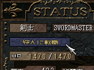

- 職業と転職 -
プレイヤーは職業を持ち、就いている職業によって
特徴が異なってきます。
以下の4種類の職業が存在します。
| 傭兵 | 初期の職業です。 別の職業に転職後は、傭兵にはなれません。 |
| 剣士 | 接近戦を得意としています。 |
| 魔道師 | 魔法を得意としています。 |
| 狩人 | 弓矢系での攻撃を得意としています。 |
・転職の条件・
武器や魔法の使用頻度によって転職できる職業が決まります。
条件に合っていればレベルアップ時に転職が出来るようになります。
・転職の方法・

転職できるようになると、ステータスウィンドウに
転職ボタンが表示され、それを左クリックすると転職が完了します。
一度転職してしまうと再度転職の機会が訪れない限り
再び転職することは出来ません。
・職業とプレイヤーのステータス・
職業によってレベルアップ時に上昇するステータスは異なります。
そのときの職業相応のステータスが上昇します。
・覚える魔法・
職業や自分の基本属性によって覚える魔法やその順番は異なります。